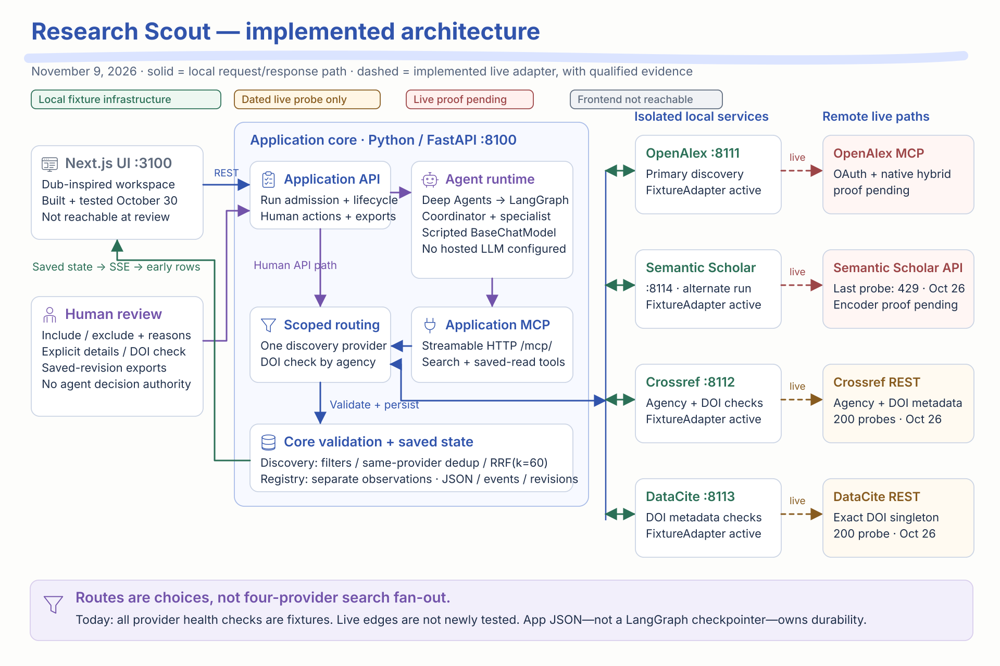

The framework is real. The model is still scripted.
Explore the implemented service connections, follow the actual two-agent workflow, and review the remaining proof needed for live research. Each diagram keeps fixture validation separate from live provider evidence.
2 compiled agent graphs4 isolated provider processesLocal MCP catalog verified todayFrontend not reachable on today’s check



A discovery run selects OpenAlex or Semantic Scholar. Explicit DOI checks route by registration agency. Solid local paths have fixture evidence; dashed upstream paths show code with pending or dated live evidence. They are not four simultaneous provider searches.
Review scope: current source inspection, source fingerprints, local health checks and MCP initialize/tools-list. No new research, registry check, hosted-model call or external provider probe was run. October 26/30 validation is historical and labeled by date.